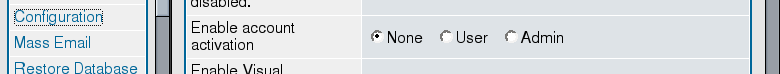

Preventing bots from registering. What doesn't work
These techniques don't work. Anyway, you'd better know about them.
User activation
User is successfuly registered. Now, there are three possibilities.
- The account is active and the user can post. (“None”)
- The user gets an automatic email with a special link. The account is active only after visiting the link. (“User”)
- The account is activated by the administrator. (“Admin”)

General Admin, Configuration, Enable account activation
Don't use email activation. It protects only from simple bots.
Don't use activation by the administrator due to usability problems:
- First of all, your new users can't post until you approve them. I'd be furious and forget about your forum. And what happens if you are week away?
- Mass-registration is popular now. Therefore, your mailbox will be full of notifications. And while deciding if a registration is good or not, you'll have to visit spam sites.
Recommendation: don't use activation.
Next: Visual Confirmation
Prev: Latest phpBB
Home: phpBB Antispam HOWTO